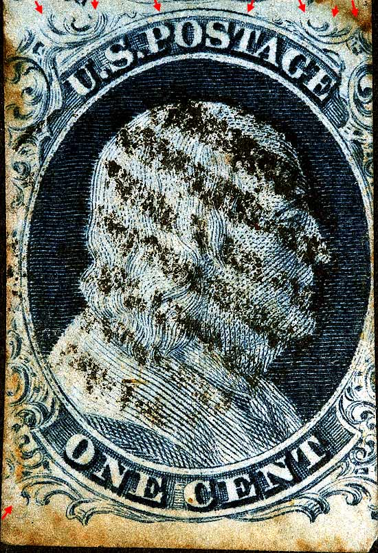
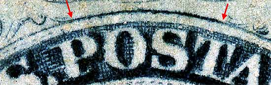
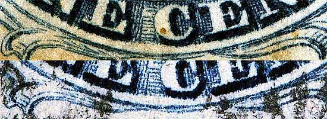
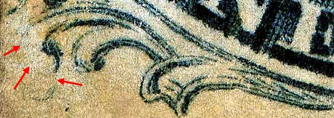
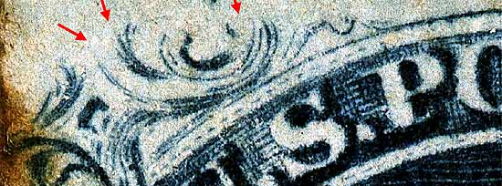
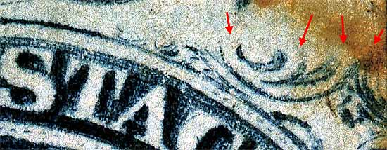

| 1¢ Franklin Issue of 1851-1857, PLATE 1 LATE.
Pos 100R1L, (Scott #9) |
| Scott #9 Blue, Type IV, Relief A Issued both imperforate and perforated. Perforated copys are more scarce. SINGLE RECUT TOP ONLY On Plate 1 in its original state (Plate 1 Early), positions 96 to 100R were entered with the "A" relief transfer roll. When the plate was reconditioned in the spring of 1852, to become what we call Plate 1 late, Positions 96R and 97R were re-entered with the "B" relief. Positions 98, 99 and 100 remained "misplaced A reliefs" as can be seen here. |
|  |
| Figure 1. (Below) Detail of TOP RECUT line.
 |
| Figure 2. (Below) The bottom curved line was not recut.
 |
| Figure 3. (Below) The lower left plume was short transfered.
 |
| Figure 4. (Below) Ornaments S, T U, and V are short because of the "A" relief entry.
 |
| Figure 5. (Below) (Below) Ornaments W, X, Y, and Z are short because of the "A" relief entry.
 |
| DISCLAIMER and COPYRIGHT INFORMATION: Thanks for visiting this site. I hope you learn something new as we are making new discoveries all the time. You, the visitor, have my permission to link to my pages and to share the INFORMATION with others. The images themselves fall under the fair use guidelines established by the United States Congress and Copyright law. Basically contact us before using. I also ask in return that you send me an e-mail if I have made a mistake, or have made some other technical blunder that in my rush to put these pages up would cause the visitor confusion. Please also visit my other website at www.slingshotvenus.com. and support the live music arts. While your there, be sure to purchase our music. There are not many philatelic rock stars around and we need all the help we can get. :-) I can be reached at: nerdman@ix.netcom.com |